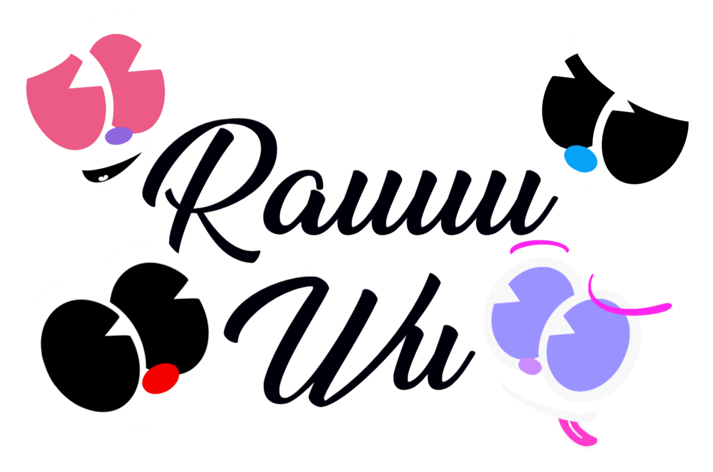

Ray
吳唯睿
A112070053
世新資訊傳播系學生
哈囉，大家好 ，我是一位就讀於世新大學的學生， 我的興趣包括畫畫、打球和打電腦遊戲。從小我就喜歡藝術創作，尤其是畫畫，這也是我其中一項特長。我喜歡捕捉生活中的美好， 用畫筆表現出來，讓觀者感受到我的想法和情感。除了畫畫，我也熱愛運動，尤其是打羽球。羽球不僅讓我保持健康，更是一種舒壓的方式， 讓我在繁忙的學業中放鬆身心。另外，我也喜歡打電腦遊戲，這不僅是一種娛樂方式，還能培養我的策略思維和團隊合作能力。 目前就讀於世新大學，我正在學習豐富多元的知識，並努力成為一名優秀的學生。在未來，我希望能夠將我的藝術與運動興趣結合起來， 找到一份讓我可以發揮創意和熱情的工作。我相信，持續不懈的努力和對生活的熱愛，一定能讓我走向成功的道路。
付費看更多